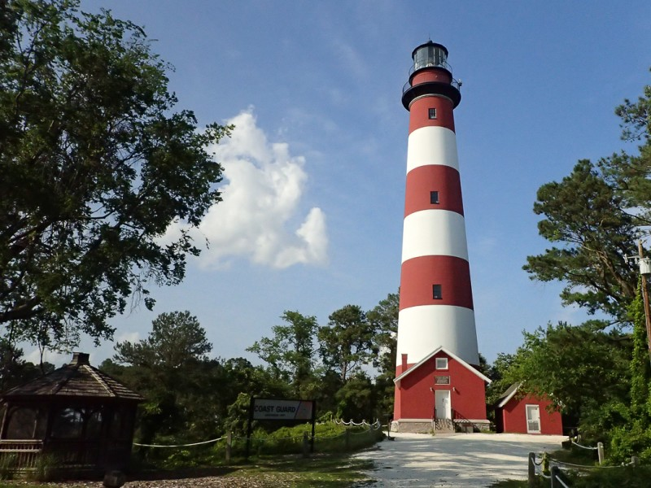
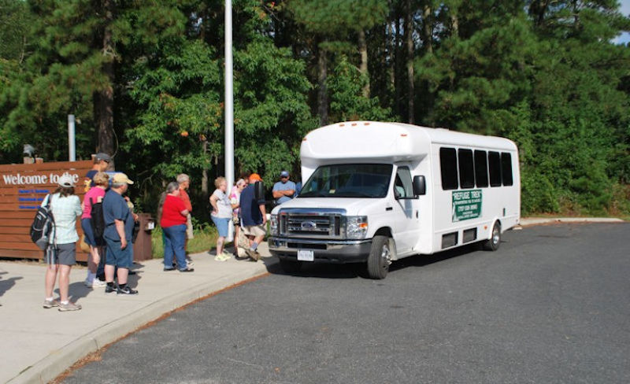
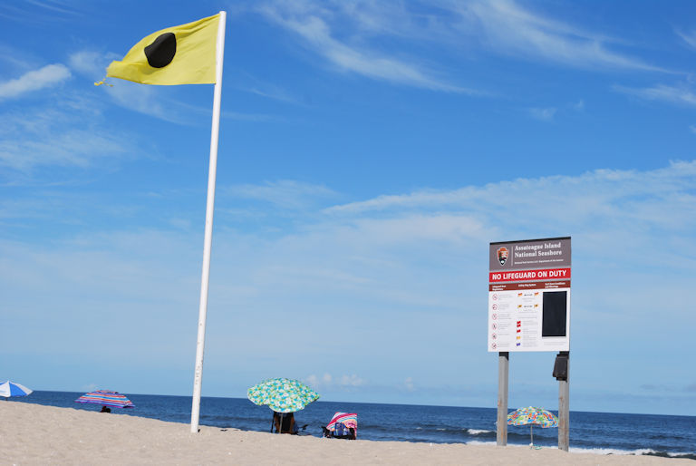
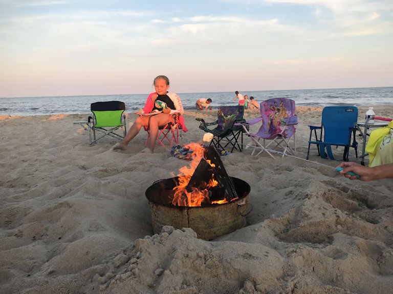
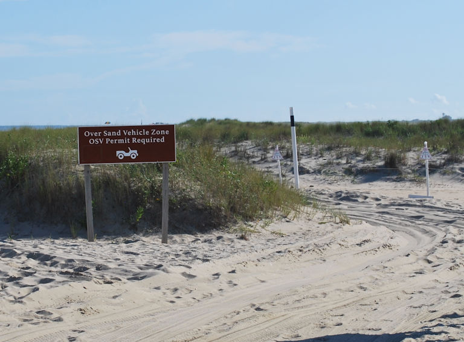
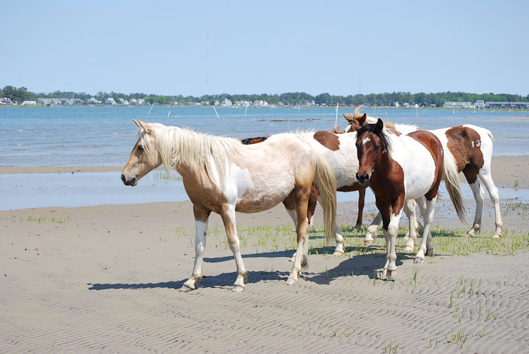
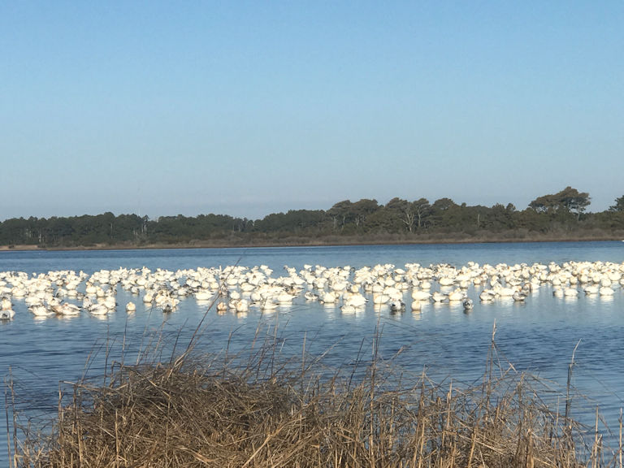
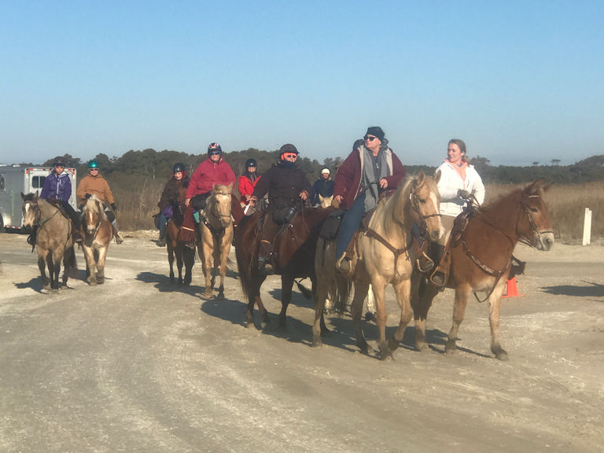

The Chincoteague National Wildlife Refuge (CNWR) is located on the Virginia portion of Assateague Island. It is one of the most visited refuges in the nation, receiving approximately 1.5 million visitors each year. Established in 1943, the Refuge and includes more than 14,000 acres of beach, dunes, marsh, and maritime forest. The Refuge is home to a spectacular variety of migratory birds, plants, and other animals. Entering Chincoteague National Wildlife Refuge, visitors are immediately surrounded by the splendor of unspoiled nature. Chincoteague National Wildlife Refuge offers a variety of outdoor recreational opportunities.
For current hours and entrance fees please check the Chincoteague National Wildlife Refuge website.
The Bateman Center has a variety of exhibits, displays, brochures and wildlife-oriented programs. Refuge staff and volunteers are available to answer questions and help plan activities.
Videos are shown by request daily in the visitor center auditorium, and programs on a variety of topics are offered during the summer. Inquire at the information desk for further details.
The gift shop, with a selection of books, clothing items, and jewelry, is located in the refuge visitor center and is run by the Chincoteague Natural History Association.
The Herbert H. Bateman Educational and Administrative Center is open 7 days a week. The hours are:
9:00 A.M. - 5:00 P.M. in the Summer
9:00 A.M. - 4:00 P.M. in the Spring, Fall & Winter
*Closed December 24th, 25th, 31st and January 1st
Address:
8231 Beach Road
Chincoteague Island, VA 23336
Telephone: 757-336-6122
The Toms Cove Visitor Center is located on the south side of Beach Road, prior to the beach parking areas. The Toms Cove Visitor Center offers beachcombing exhibits, educational brochures, a marine aquarium and touch tank. A bookstore, entrance passes, over-sand vehicle permits, overnight fishing passes, campfire reservations, lost and found and emergency services are available. Regularly scheduled park activities are available seasonally. Education programs for schools are given spring and fall. Information is available upon request.
Toms Cove Visitor Center hours of operation:
March - November: Open 7 days/week
December - February: Open Friday - Monday
Closed on Thanksgiving and Christmas days
Winter: 9:00am - 4:00pm
Spring & Fall: 9:00 am - 5:00 pm
Summer: 9:00 am - 5:00 pm
The Assateague Island lighthouse was constructed in 1867 and is listed on the Virginia Historic Register. In 2008, restoration of the lighthouse began to preserve this historic treasure. Extensive work was done including repairs to the gallery deck so that visitors can safely enjoy the view from the top of the lighthouse and a new paint job that can be enjoyed while admiring the building from the ground.
The lighthouse is open spring-fall, but is closed for the winter months. Days of operation change seasonally. When open, climbs are available 9:00am to 12:00pm and 12:30pm to 3:00pm. Lighthouse access is free to the public.
Lighthouse access may occasionally be cancelled due to inclement weather, safety considerations or staffing. For current operation status and accessibility please call 757-336-3696 or visit www.piping-plover.org.
The use of insect repellent is highly recommended for the walk to the lighthouse.
More information about climbing the Assateague Lighthouse
Refuge Trek tours provide bus tours up the 7-mile Service Road for visitors wishing to view wildlife. Horses, white-tailed deer, sika elk, a variety of birds and other wild refuge residents await you on this road less traveled. Please dress for the weather as riders will be allowed to get off the bus at select locations. Insect repellent, water, cameras and binoculars are recommended.
Refuge Treks have limited space. You can call to reserve your seat(s) before they sell out. Bus transportation is occasionally canceled due to inclement weather, safety considerations or staffing. For tour availability, pricing, and reservations please call 757-336-3696 or visit www.piping-plover.org.
More information about Refuge Trek Tours
Miles of trails are available on Assateague Island for hiking or biking. About half are paved while the rest are open to foot traffic only. Trail maps are available at the Herbert H. Bateman Educational and Administrative Center or download a printable map here. The use of insect repellent is highly recommended while on the nature trails.
Lighthouse Trail (0.25 mile loop, foot path)
Wildlife Loop (3.25 mile loop, paved and wheelchair accessible)
Swan Cove Trail (0.5 miles one-way, paved and wheelchair accessible)
Black Duck Trail (1 mile one-way, paved and wheelchair accessible)
Marsh Trail (0.5 miles one way, foot path)
Woodland Trail (1.6 miles round trip, paved and wheelchair accessible)
Bivalve Trail (0.25 miles one-way, foot path)
Service Road (7.5 miles one-way, gravel foot path with limited bicycle access)
Assateague Island offers perhaps the most beautiful beach on the Atlantic Coastline. During the summer season swimmers and sunbathers flock to this white sandy oasis. The beach parking lots fill up fast, so be sure to get there early. A good rule of thumb is to get there before 10am or after 2pm during the peak summer season.
Shell collection is a popular activity for beach goers (limit one gallon per person per day).
Lifeguards are typically on duty from 10:00 A.M. to 5:00 P.M daily Memorial Day through Labor Day. The lifeguard protected section of the beach is designated by yellow flags.
There is something magical about a campfire on the beach at sunset. It is a family favorite summertime activity. We encourage you to give it a try. Its sure to be an experience you won’t soon forget!
Contained fires are allowed on the beach without permit (containers must be metal). Open campfires are only allowed in designated sites and a permit is required. Visitors may obtain a fire permit, free of charge, and a site assignment from the Toms Cove Visitor Center. For more information please contact them at (757) 336-6577.
More information about campfires on the beach
Two Over-Sand Vehicle (OSV) zones feature miles of unspoiled beach to explore. The South Zone is open for general use. In order to safeguard threatened and endangered species, part of the South OSV zone closes to all access from March 15 – August 31, or until the last nesting shorebird can fly. The North Zone is for fishing only and is open seasonally (March 15 - August 31st).
A four wheel drive vehicle and valid OSV permit are required. OSV permits can be purchased from the Toms Cove Visitor Center. For more information please contact them at (757) 336-6577.
The OSV zones are subject to unexpected closure due to storm overwash. Status updates for the OSV zones can be found here.
Fishing, crabbing and clamming are popular activities at Chincoteague National Wildlife Refuge and are permitted in designated areas. All the supplies you need can be found on Chincoteague Island, at bait and tackle shops or at an equipment rental store.
State of Virginia size and quantity regulations apply and are enforced by refuge law enforcement. Check the Virginia Marine Resources Commission Website for current regulations.
A valid Virginia Saltwater Fishing license is required for anyone fishing over the age of 16.
Wild ponies have inhabited Assateague Island for hundreds of years. These short, stocky Ponies have adapted to their environment over the years by eating dune and marsh grasses and drinking fresh water from ponds. While they appear tame, they are wild, and Park Rangers urge visitors not to feed or pet them.
While some suggest that the wild ponies on Assateague Island trace their origin to horses released to forage on the Island by early settlers, the circumstantial evidence suggests that they are indeed the descendants of survivors of ship wrecks in the Atlantic Ocean, off the coast of Assateague Island.
A fence along the Virginia/Maryland State line separates Assateague Island's ponies into two herds. The Maryland herd is owned by the National Park Service. The Virginia herd is owned by the Chincoteague Volunteer Fire Company. The US Fish & Wildlife Service allows the Fire Company to maintain a herd of approximately 150 adult ponies on Assateague Island. About fifty of the adult ponies are fenced into an area just to the south of the main road and can be viewed by the public. The other hundred adult ponies are kept in an area further north. Public viewing of the North herd is limited. Viewing options include hiking up the 7.5 mile Service Road, take the Refuge Trek tour bus, or take a Scenic Tour Boat out of Chincoteague.
The Fire Company controls the herd size with a pony auction on the last Thursday in July. Each year tens of thousands of spectators come to watch the Saltwater Cowboys swim the pony herd from Assateague Island to Chincoteague Island.
More information about Chincoteague Ponies
There are multiple boat tours that leave from Chincoteague Island and explore the back bays and marshlands of Assateague Island. Each of these tour boat operations has a Commercial Use Authorization Permit from the National Park Service which allows them to operate their tours within the boundary of the Assateague Island National Seashore. These boat tours a great way to explore the hidden beauty and natural splendor of Assateague Island! They are also one of the best ways to get close to the wild ponies on Assateague Island.
More information about Assateague Island Boat Tours
Because of its position on the Atlantic Flyway, Chincoteague National Wildlife Refuge is an ideal place for birds to rest, feed, nest, or winter. This makes the refuge a great place for bird watching, as well as other species of wildlife and plants.
Some of the popular sites to observe wildlife are at Swan Cove Pool along Beach Road. Herons and egrets can be seen in the borrow ditches around the refuge. The Woodland Trail is an excellent place to observe songbirds and Delmarva Fox Squirrels. Snow Goose Pool, in the Wildlife Loop, is a popular spot for many bird species.
Visitors may also borrow a pair of binoculars, free of charge, from the refuge visitor center, to help with their birding experience.
Horseback riding is allowed along the beach in the South Over Sand Vehicle (OSV) zone. The South OSV zone may be closed due to hazardous conditions or wildlife management practices, and horses will not be permitted in this area during such closures. Horses are not permitted elsewhere on the refuge, including the trails or on Beach Road.
Kayaks, canoes and paddleboards can be launched and landed only in designated areas of the refuge. This includes Toms Cove Hook between September 1st and March 14th or as otherwise posted. Kayaks are not permitted in lifeguarded sections of the beach, nor are kayaks allowed in refuge impoundments or borrow ditches.
Kayaks, canoes, and paddleboards can be rented on Chincoteague Island, click here for details.
Chincoteague National Wildlife Refuge hosts a number of ranger guided programs throughout the year that are fun for the whole family.
Check out the CNWR events calendar to find out about upcoming ranger guided programs on the refuge!
Chincoteague National Wildlife Refuge offers a variety of programs that provide students with opportunities to discover and explore the Assateague Island's wildlife and habitats from the beach to the bay.
More information for educators.